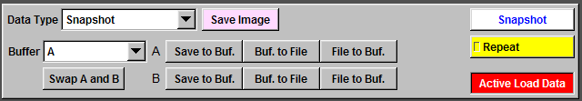

|
To save the imaging window to a TGA file, click "Save Image" and follow the instructions. To take a snapshot during an experiment, click "Snapshot". To contineously acquire imaging data and display it, click "Repeat". By default, imaging data is automatically loaded when you open a record. If you want to analyze the electrophysiology data only and want to increase the analysis speed, you can uncheck "Active Load Data" and the imaging data won't be loaded. |
 |